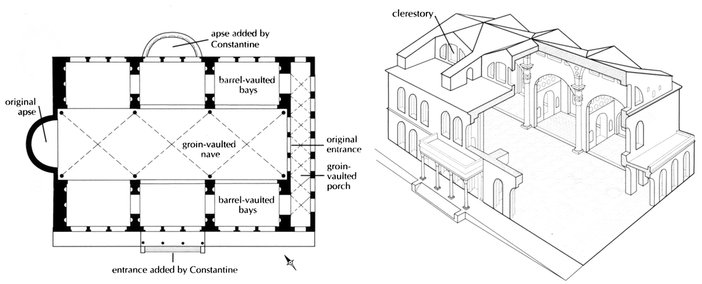
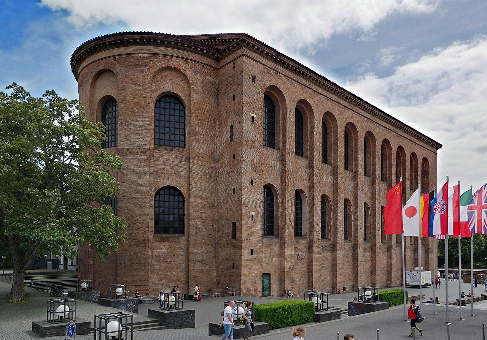
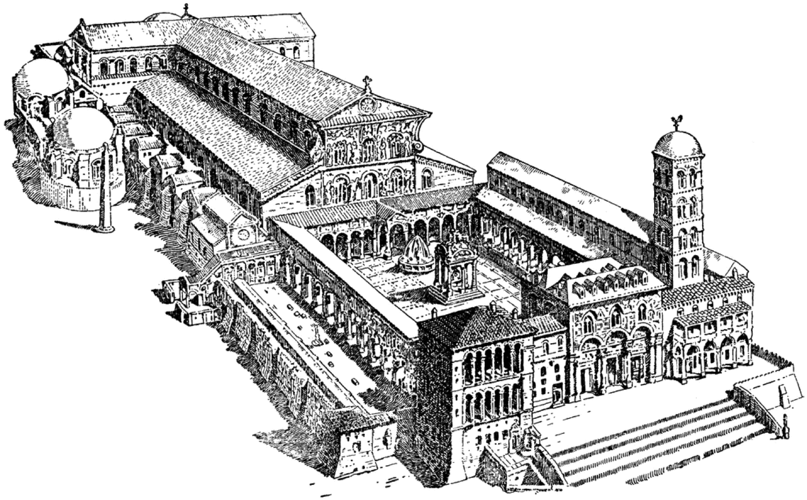
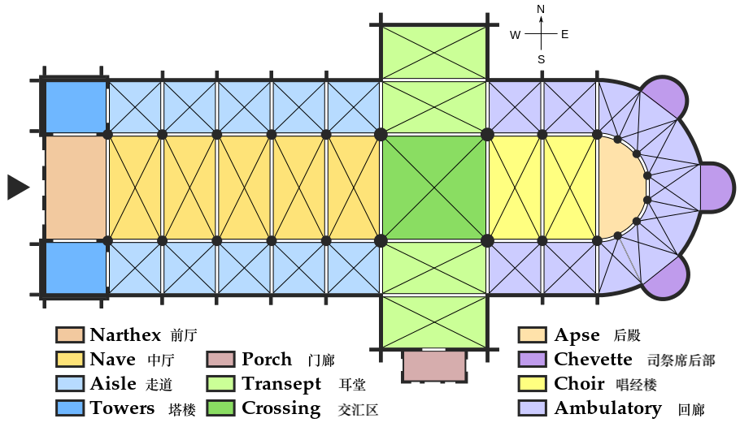
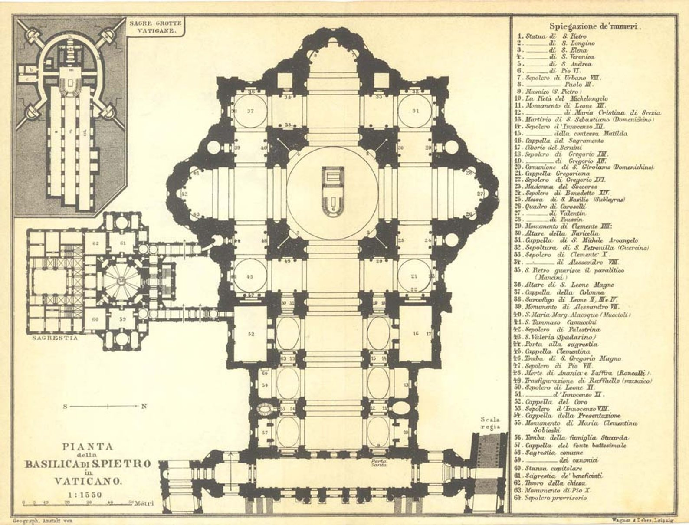
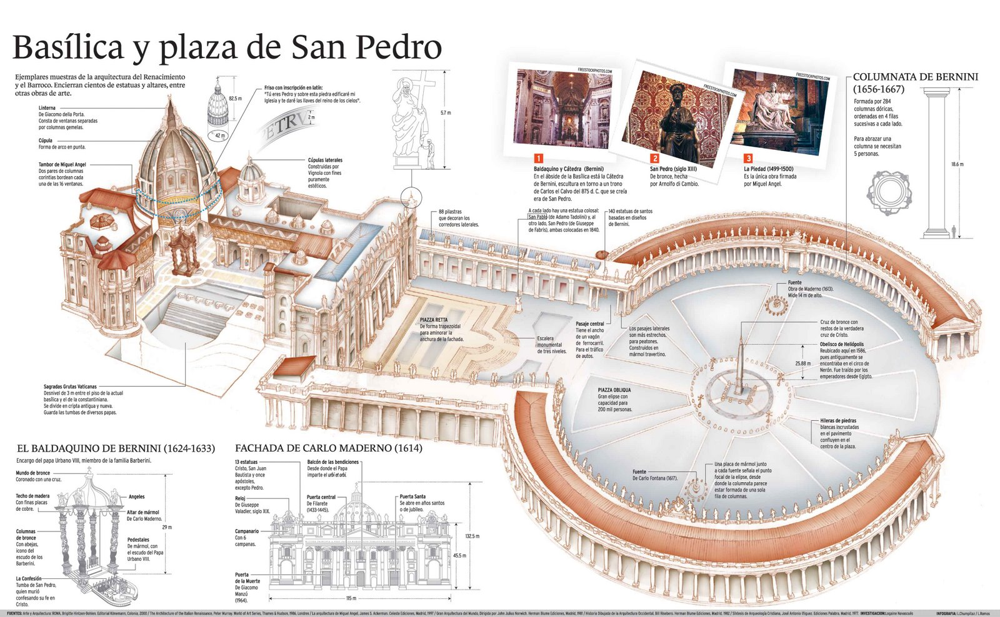

不懂系列之教堂 – 巴西利卡 Basilica
文章目录
一直对西方建筑有点朦胧的好奇心，其中最大的一类就是各种宗教建筑。 中文翻译时会显得粗犷，常对Basilica、Cathedral、Church等都译为“教堂”。 实际不同宗教建筑或宗教场所，都有不同的名称类别，有点像是东方的宗教建筑名称：寺、庙、观、庵等。
Basilica，拉丁词，源于希腊语“βασιλικὴ στοά (basilikè stoá)”，意指“王者之所”。中文直译为巴西利卡。 Basilica常在三个场景中使用，最初是用于表示某些特定功能的政治建筑，渐渐成为某类特定的宗教（基督教）建筑样式，最后也是当代的用法，用于授予某个特定资格的教堂。
政治建筑的样式
最初Basilica表示君主或执政官的办公建筑，如法院、政府；古罗马的很多城市在广场旁边都会建basilica，也称为Palace basilica。 特点： 平面呈长方形，外侧有一圈柱廊，主入口在长边，短边有耳室，采用条形拱卷做屋顶。 代表： 在公元310年左右君士坦丁大帝Constantine时期，罗马的疆域拓宽至欧洲中部，各重要地域都建了巴西利卡。[1] 从现今只剩北墙的The Basilica of Maxentius and Constantine（图1）和保存完整的The Basilica of Constantine（另称Aula Palatina）君士坦丁巴西利卡（又称Aula Palatina）（图2）。
 图1-a. The Basilica of Maxentius and Constantine平面样式
平面样式
 图2-b. The Basilica of Constantine，建于310年，德国特里尔 Germany Trier
 图3-a. Old St. Peter’s Basilica平面样式
 图3-b. Old St. Peter’s Basilica，始建于318~322年间，建成于360年，梵蒂冈城Vatican City
宗教建筑的样式
从4世纪开始，随着基督教在欧洲的传播及主流化，一座座教堂拔地而起，以罗马Basilica式建筑为雏形，渐渐演变出基督教教堂的主流建筑风格。 特点： 在罗马传统的basilica形式上，进行微调，在垂直于原巴西利卡的长轴左右两边增加耳堂，形成了一个横廊，横廊的高度与宽度与中厅一致，演变为十字巴西利卡cross-shape basilica（图4）。 因其平面样式与耶稣受难的十字架符号相近，十字巴西利卡在此后成为基督教教堂最常借鉴的建筑样式。[2] 代表： 再次请出鼎鼎大名的St. Peter’s Basilica（图5），当然是升级版本。
 图4. 拉丁十字形的Basilica平面图
 图5-a. St. Peters Basilica平面图，1926年, 梵蒂冈城Vatican City
 图5-b. St. Peter’s Basilica模型，梵蒂冈城Vatican City
 图5-c. St. Peter’s Basilica鸟瞰图，梵蒂冈城Vatican City
图5-c. St. Peter’s Basilica鸟瞰图，梵蒂冈城Vatican City
历史总是随性地循环着喜好，就像是见多了艳丽的花丛，偶尔喜欢上清新的草木。 在19世纪末，美国建筑家用“经典”的十字巴西利卡cross-shape basilica建筑风格建造出美国人心中的圣彼得和保罗教堂Basilica of Saints Peter & Paul。
 图6. Basilica of Saints Peter & Paul，建于1852年，建成于1863年，美国田纳西洲 Chattanooga
图6. Basilica of Saints Peter & Paul，建于1852年，建成于1863年，美国田纳西洲 Chattanooga
宗教建筑的头衔
当然，在千年基督教的分分合合中，巴西利卡已经不仅仅是一种宗教建筑风格。在现代通常意义上，basilica是指罗马天主教给予规模大、意义重的天主教堂Catholic church的头衔，也译为宗座圣殿。 根据圣殿的级别，又划分为特级宗座圣殿Major Basilica、乙级宗座圣殿Minor Basilica。
特级宗座圣殿 特级宗座圣殿是罗马天主教会给予拥有重要地位的宗座圣殿的头衔，设有教皇的祭坛和圣门。 全球仅四座巴西利卡享有其尊称： 拉特朗圣约翰大殿 St. John Lateran，也称 the Lateran Basilica，是罗马主教（教宗）的主教座所在，特级中的特级，也就是唯一的总宗座圣殿（Archbasilica）。 圣彼得大殿[3] St. Peter’s，也称 the Vatican Basilica，建于圣彼得的坟墓处，唯一的位于梵蒂冈城的圣殿。 城外圣保罗大殿[4] St. Paul’s outside the Walls，也称 the Ostian Basilica，建于圣保罗的坟墓处。 圣母大殿[5] St. Mary Major，也称 the Liberian Basilica。
{kind=link}
{kind=link}
{kind=link}
{kind=link}
 表1. 全球巴西利卡Basilica分布
表1. 全球巴西利卡Basilica分布
参考： [1] 君士坦丁时期的艺术与建筑，https://brewminate.com/art-and-architecture-of-constantine-and-a-new-rome/ [2] 从巴西利卡到拉丁十字，https://www.academia.edu/35115094/%E4%BB%8E%E5%B7%B4%E8%A5%BF%E5%88%A9%E5%8D%A1%E5%88%B0%E6%8B%89%E4%B8%81%E5%8D%81%E5%AD%97 [3] 圣彼得大殿，https://www.klook.com/ko/activity/4482-early-admission-sistine-chapel-st-peters-basilica-rome/ [4] 城外圣保罗大殿，https://colosseumrometickets.com/basilica-of-saint-paul-outside-the-walls/ [5] 圣母大殿，https://www.tulaoer.org/2-Landscape/1-Spring/2014/Santa_Maria_Maggiore.html [6] 全球巴西利卡地图，http://www.gcatholic.org/churches/bas.htm